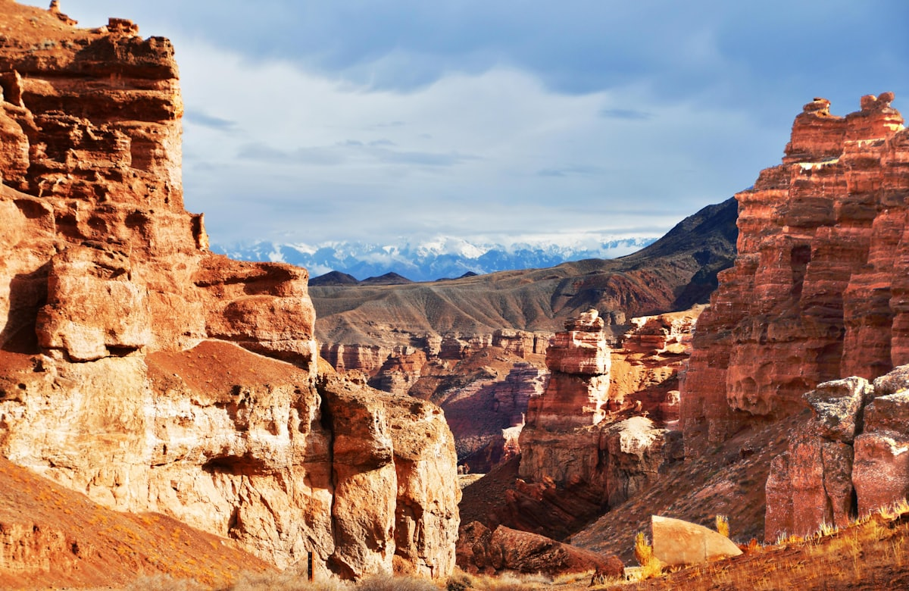
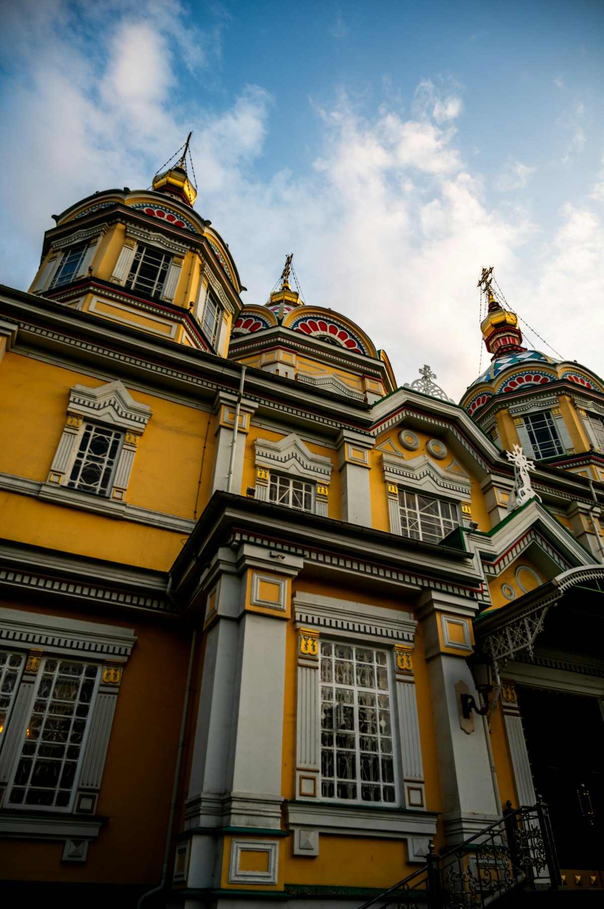
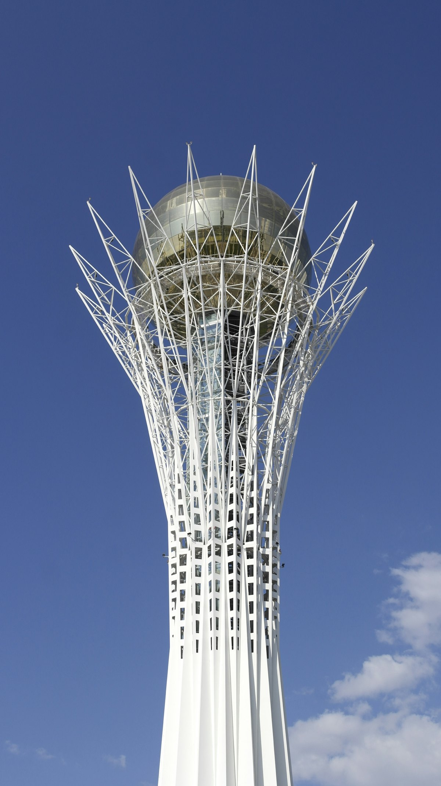
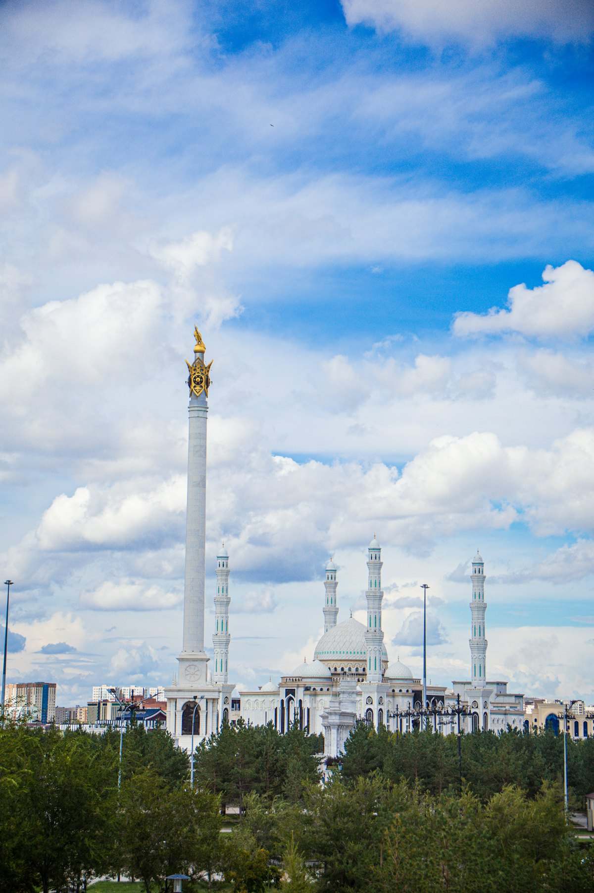
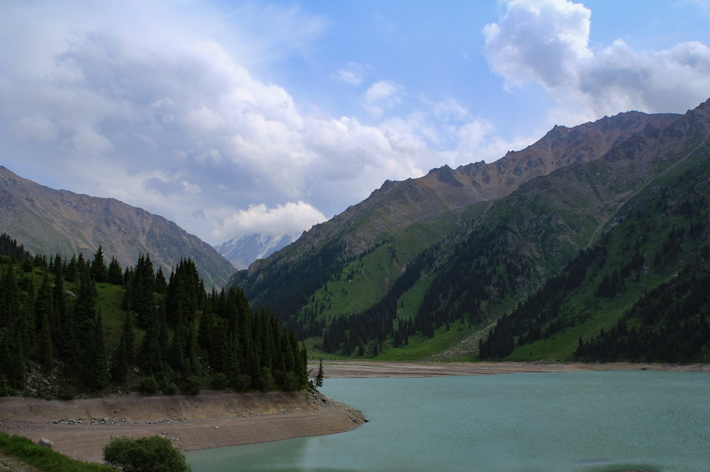
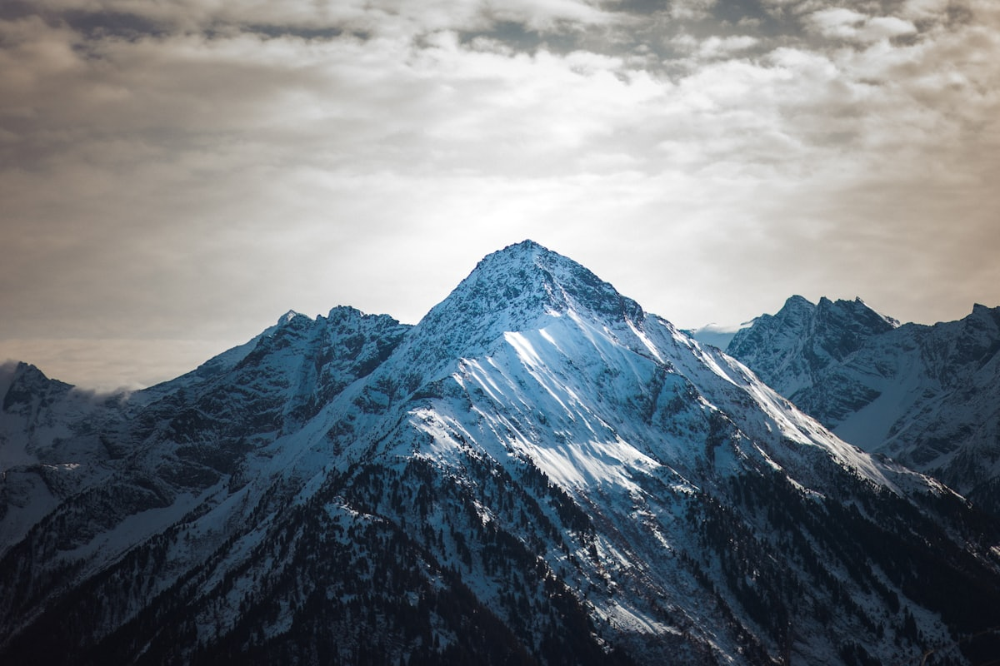
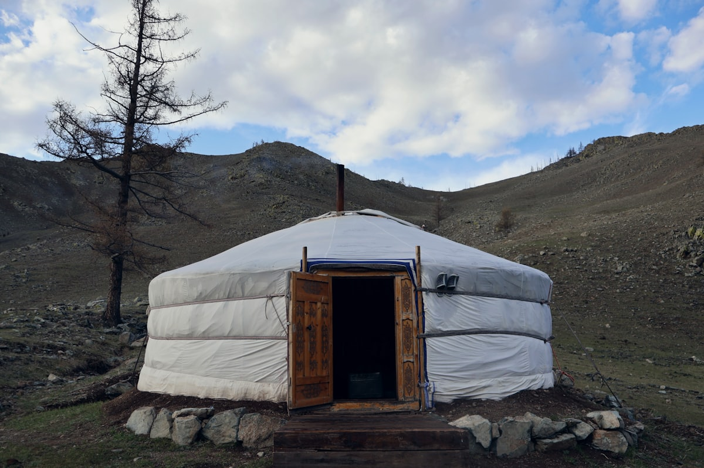
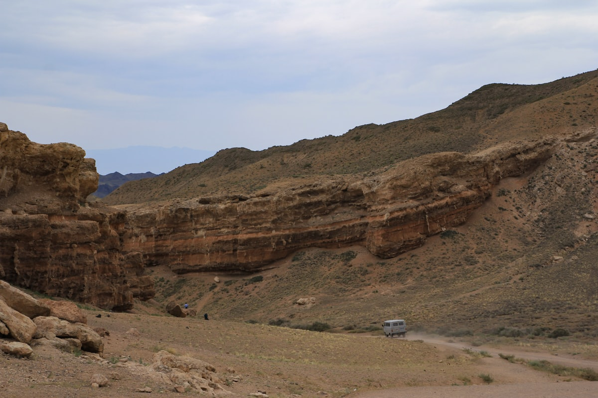

| 事项 | 结论 |
|---|---|
| 事项 | 结论 |
| 签证（最关键） | 中哈互免签证协定 2023.11.10 生效，中国普通护照免签 30 天（180 天内累计不超 90 天），9 天行程绰绰有余，无需办签 |
| 推荐方案 | 阿拉木图 4 天（含恰伦峡谷一日）+ 阿斯塔纳 3 天 + 天山 1 天 + 返程 1 天 |
| 返程约束 | 第 9 天从阿拉木图直飞返京；若从阿斯塔纳返需中转，建议统一从阿拉木图走 |
| 行程链 | 北京 → 阿拉木图 → 恰伦峡谷 → 阿斯塔纳 → 天山·琼布拉克 → 返程 |
| 预算（人均） | 经济 8000–12000 ／ 标准 15000–22000 ／ 舒适 30000–45000（人民币） |
| 三件提前事 | ① 订北京⇄阿拉木图往返机票 ② 订阿拉木图✈阿斯塔纳机票（FlyArystan 特价）③ 恰伦峡谷/琼布拉克拼团或包车 |
| 季节提醒 | 5–9 月草原与峡谷最佳（峡谷 7–8 月中午可达 +40℃）；12–2 月琼布拉克滑雪旺季；冬季阿斯塔纳可低至 -30℃ |
| 支付 | 现金坚戈为主（峡谷/小摊只收现金）+ Visa/Master 卡 + Yandex Go 叫车 |
以下为 9 天 8 晚的推荐节奏：前 4 天阿拉木图（含恰伦峡谷一日），第 5 天飞往阿斯塔纳住 3 晚，第 8 天回到阿拉木图上琼布拉克天山，第 9 天返程。每日主景点 ≤2 个，境内以飞机 + Talgo 夜车为主。
| 日期 | 行程 | 过夜地 | 主题 |
|---|---|---|---|
| D1 抵阿拉木图 | 北京✈阿拉木图（直飞约 5.5h），入住市中心，傍晚步行街散步 | 阿拉木图 | 抵达+预热 |
| D2 | 升天大教堂+潘菲洛夫公园 → 绿巴扎 → 科克托别山缆车看夜景 | 阿拉木图 | 市区人文 |
| D3 | 大阿拉木图湖（海拔 2511m）环湖徒步 → 梅杰奥高山冰场 | 阿拉木图 | 天山湖泊 |
| D4 | 恰伦峡谷一日：城堡谷徒步 → 恰伦河畔午餐 → 黄昏返程 | 阿拉木图 | 峡谷日 |
| D5 | 阿拉木图✈阿斯塔纳（约 1.5h）→ 入住 → 巴伊捷列克塔登顶看落日 | 阿斯塔纳 | 飞首都 |
| D6 | 努尔若尔大道 → 可汗沙特尔帐篷城 → 独立广场 | 阿斯塔纳 | 未来之城 |
| D7 | 哈兹拉特苏丹清真寺 → 国家博物馆（黄金人）→ 和平宫金字塔 | 阿斯塔纳 | 文化日 |
| D8 | 阿斯塔纳✈阿拉木图 → 琼布拉克天山缆车徒步（塔尔加尔山口 3163m） | 阿拉木图 | 天山日 |
| D9 返程 | 自由活动/绿巴扎补货 → 阿拉木图✈北京（直飞约 5.5h） | — | 收尾 |
以下为 9 天全程的逐小时执行时间线，可当作「当天打开照着走」的清单。标注 ※ 的可选项视体力与天气取舍。
| 时间 | 事项 |
|---|---|
| 14:00–17:00 | 北京✈阿拉木图（南航 CZ5097 大兴直飞约 5.5h，每日一班；国航 CA799/800 每周一三五日）。哈萨克斯坦时差 -2h，落地比北京晚 2 小时 |
| 17:30–19:00 | 入境（免签 30 天，备好返程机票行程单）。机场少量换汇/取现（机场汇率略差），Yandex Go 打车进市区（约 5000–7000 坚戈） |
| 19:30–21:00 | 入住市中心酒店（升天大教堂/绿巴扎一带），便利店补坚戈现金 |
| 21:00 | 阿拉木图步行街（Arbat）晚餐：烤串 + 拉格曼拉面，回酒店休息 |
| 时间 | 事项 |
|---|---|
| 08:30–11:00 | 升天大教堂（免费）：世界第二高全木教堂，56m 无钉榫卯结构，潘菲洛夫公园内，28 勇士纪念墙与永恒之火 |
| 11:00–13:00 | 绿巴扎（免费）：中亚最大市集之一，一楼坚果、蜂蜜、马肠、干果，二楼吃烤包子（Samsa）与手抓饭 |
| 13:00–14:00 | 午餐：绿巴扎二楼抓饭/烤肉，备小额现金 |
| 15:30–17:30 | 科克托别山（缆车往返约 6000 坚戈）：海拔 1070m 俯瞰全城与天山，彩虹椅、披头士雕塑、山顶餐厅 |
| 18:30–20:30 | 山顶看落日与城市夜景，下山后晚餐，回酒店 |
| 时间 | 事项 |
|---|---|
| 08:00 | 市区包车/拼车出发，前往大阿拉木图湖（海拔 2511m，车程约 1.5h） |
| 09:30–12:30 | 大阿拉木图湖（免费）：冰川湖蓝绿色湖水倒映天山，环湖徒步或观景台拍照，注意保暖与防晒 |
| 12:30–13:30 | 湖边野餐或返程途中简餐 |
| 14:30–16:30 | 梅杰奥高山冰场（世界最高室外冰场，海拔 1691m）：夏季可参观，冬季可滑冰（门票约 1000–2000 坚戈） |
| 17:00 | 返阿拉木图市区，晚餐：哈萨克传统餐厅（马肠/别什巴尔马克） |
| 时间 | 事项 |
|---|---|
| 07:00 | 出发（单程约 3–3.5h 车程，途经赤利克村、拜塞特市场） |
| 10:30 | 入园（门票 730–1500 坚戈，只收现金；需出示护照，边境检查站） |
| 10:45–14:00 | 城堡谷徒步：红橙色岩柱为 300 万年风蚀形成，谷底温度高，多带水（夏天中午可达 +40℃） |
| 14:00–15:00 | 恰伦河畔午餐（野餐或简餐） |
| 15:00 | 生态车（约 500 坚戈）或徒步回程，17:30–19:00 返阿拉木图 |
| 时间 | 事项 |
|---|---|
| 09:00 | 阿拉木图✈阿斯塔纳（FlyArystan/阿斯塔纳航空约 1.5h，提前订 250–600 元） |
| 11:00 | 机场快线/打车进市区（努尔若尔大道一带），入住酒店 |
| 13:30–15:00 | 午餐：可汗沙特尔美食广场 |
| 16:00–19:00 | 巴伊捷列克塔（成人 2000 坚戈）：97m 观景台 360° 俯瞰未来之城，日落光线最佳 |
| 19:30 | 努尔若尔大道散步，晚餐河畔餐厅 |
| 时间 | 事项 |
|---|---|
| 09:30–12:00 | 可汗沙特尔（免费）：世界最大帐篷（高 150m，福斯特设计），室内购物中心 + 人工海滩（Sky Beach 日票约 15000 坚戈） |
| 12:00–13:00 | 可汗沙特尔美食街午餐 |
| 14:00–16:00 | 独立广场 + 哈萨克之州纪念碑（免费）：阿斯塔纳中轴线地标 |
| 16:30–18:30 | 努尔阿勒姆球体（EXPO-2017 未来能源博物馆，门票约 2000 坚戈）或伊希姆河畔散步 |
| 19:00 | 晚餐：阿斯塔纳特色餐厅（马肠、别什巴尔马克） |
| 时间 | 事项 |
|---|---|
| 09:00–11:00 | 哈兹拉特苏丹清真寺（免费）：中亚最大清真寺之一，经典伊斯兰风格，女性需戴头巾 |
| 11:30–14:00 | 哈萨克斯坦国家博物馆（主展 700 坚戈，黄金展厅 +1000 坚戈）：伊塞克金人、黄金战士与游牧历史，周一闭馆 |
| 14:00–15:00 | 午餐：博物馆附近或市中心 |
| 15:30–17:30 | 和平与和解宫（成人约 1000–2500 坚戈）：金字塔形建筑，可参加团体导览 |
| 18:30 | 伊希姆河岸散步，晚餐 |
| 时间 | 事项 |
|---|---|
| 09:00 | 阿斯塔纳✈阿拉木图（约 1.5h） |
| 11:30 | 午餐后前往梅杰奥（市区乘 12 路公交或打车） |
| 13:00–16:00 | 琼布拉克天山缆车（梅杰奥—琼布拉克—塔尔加尔山口，缆车往返约 3500–10000 坚戈）：海拔 2260m→3163m，360° 雪山观景，夏季徒步、冬季滑雪 |
| 16:30–18:00 | 缆车下山，山地咖啡馆休息 |
| 18:30 | 返市区，晚餐庆功 |
| 时间 | 事项 |
|---|---|
| 08:30–11:00 | 自由活动：绿巴扎补货（马肠、蜂蜜、干果、毡帽伴手礼），或补逛阿拉木图中央国家博物馆（若没去过） |
| 11:30–12:30 | 午餐：最后一顿手抓饭/拉格曼 |
| 13:00–15:00 | 退房，前往机场（预留 2h 值机） |
| 16:00–21:30 | 阿拉木图✈北京（直飞约 5.5h），入境到家 |
必去（必去）/ 顺路（顺路）/ 可跳过（可跳过）。

必去
必去
必去
必去
必去
顺路
顺路图片为 Unsplash 主题图（恰伦峡谷、升天大教堂、巴伊捷列克塔、天山雪山、哈萨克草原等，部分为同主题示意图），用于页面配图。更多免费景点：潘菲洛夫公园、绿巴扎、独立广场、哈兹拉特苏丹清真寺。
点击左侧节点可在地图上定位；点击地图 marker 会高亮对应节点。坐标为 WGS-84 转 GCJ-02 纠偏后标注。
以下为单人、不含购物的估算，人民币计价；出发地基准北京。汇率按 1 元 ≈ 62 哈萨克坚戈估算。往返机票按淡季直飞 2500–4500 元计。
| 项目 | 经济（8000–12000） | 标准（15000–22000） | 舒适（30000–45000） |
|---|---|---|---|
| 往返机票 | 北京⇄阿拉木图直飞 2500–3500 | 含境内航段 4000–5500 | 直飞商务/灵活 7000–12000 |
| 住宿（8 晚） | 青旅/民宿 150–250/晚 | 三星 300–500/晚 | 四五星 800–1800/晚 |
| 境内交通 | Talgo 硬卧/巴士 500–900 | 飞机+火车 1200–1800 | 全程飞机+包车 3000–5000 |
| 门票 | 基础景点约 200–400 | 含博物馆/缆车 500–800 | 全含+室内海滩 1500–2500 |
| 餐饮（9 天） | 快餐+简餐 1800–2500 | 正常下馆子 3500–5000 | 特色餐厅 8000–12000 |
喜欢徒步可把琼布拉克（D8）延长为 2 天：塔尔加尔山口徒步、留宿山地度假村，再加码大阿拉木图湖环湖线。冬季（12–2 月）琼布拉克是滑雪场，全天雪票约 15500 坚戈，可用它替换大阿拉木图湖。
哈萨克斯坦免签 30 天，若假期更长，可从阿拉木图飞乌兹别克斯坦塔什干（直飞约 1.5h，乌兹别克对中国护照开放电子签），把撒马尔罕、布哈拉串进同一趟中亚之旅。跨境前请核实免签天数与第三国签证要求。
| 方式 | 时长 | 参考价 | 备注 |
|---|---|---|---|
| 直飞（推荐） | 北京✈阿拉木图约 5.5h | 往返 2500–4500 元 | 南航每日一班（大兴 CZ5097）、国航每周一三五日 |
| 转机 | 8–14h | 2000–3800 元 | 经乌鲁木齐/首尔/迪拜转机，便宜但费时 |
| 国际铁路 | — | — | 中国到哈萨克斯坦无直达客列，只能飞机 |
| 区域 | 价格/晚 | 优点 | 短板 |
|---|---|---|---|
| 阿拉木图·市中心（升天大教堂一带） | 经济 150–250 / 标准 300–500 | 景点步行可达，餐厅多 | 夏季旺季房源紧张 |
| 阿拉木图·绿巴扎/步行街 | 经济 120–200 / 标准 280–450 | 市井烟火气，购物方便 | 夜间稍吵 |
| 阿斯塔纳·努尔若尔大道（左岸） | 标准 350–600 / 舒适 800–2000 | 地标集中，未来感夜景 | 价格偏高 |
| 阿斯塔纳·巴伊捷列克周边 | 标准 400–700 | 观景塔与河畔近，安静 | 餐饮选择少 |
| 山区·梅杰奥/琼布拉克 | 度假村 800–2000（含餐） | 雪山景观，适合留宿 | 一泊二食价格高，需提前订 |